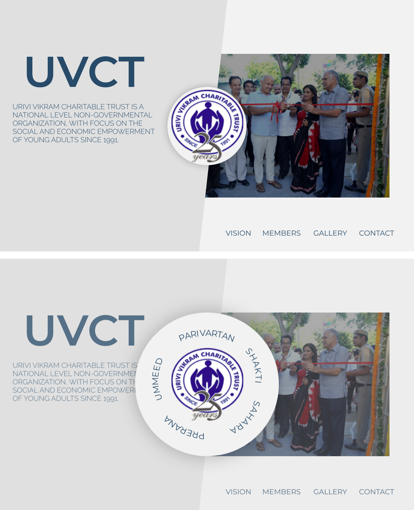

NAĐA STOJANOVIĆ
// web development and design
York, UK / Podgorica, Montenegro
York, UK / Podgorica, Montenegro
Located in the heart of Dakar, Asma Audit & Conseil is a multidisciplinary accounting firm, working with a large number of companies in the areas of accounting, advisory, and auditing.
This is my most recent project and I have chosen to highlight it because it involved starting from scratch to achieve the company's goals through rebranding and a website redesign. My role consisted of recognizing problems with the existing website and creating a new, better online presence for Asma Audit & Conseil.
Working on a redesign, it is important to analyze the current website and focus on areas which require improvement. In this particular case, some of the things I noted were too much text, lack of dynamic content, difficulties while navigating the website and poor visual elements.
Understanding the mission and the goals of the company was crucial to a successful rebranding. Communication was key in determining which creative direction I should take as I worked on the color palette, logo design and the overall feel of the website.


some of the ideas I had for the company's logo
I tried to combine what I knew about Asma Conseil & Audit and create a User Experience which portrays their company as accurately as possible. I used different technologies to achieve a more visually centered approach and break up large quantities of text. As a result, the website is now informative, useful and appealing.
In the end, I managed to reach the client's goals and present a solution which was beneficial to the company. More users were attracted to the website, and spent a longer time browsing the pages and content.


After my summer internship was done, we reconnected next summer for a bigger project - the redesign of the entire website. The goal was to make the new UVCT website more modern and minimalistic while maintaining a blue and grey colour scheme. The current website had plenty of information for visitors, but it was crowded and very hard to find specifically what you're looking. I got to work and here is the look I came up with using Figma.
Urivi Vikram Charitable Trust is an Indian non-governmental organization promoting education among the impoverished youth. My first encounter with UVCT happened through an acquaintance. After I familiarised myself with their vision, I knew I wanted to intern there. I became a graphic designer intern.
As part of this role, I designed banners and posters for some of their workshops and events, as well as the annual report. I was also in charge of maintaining the website and uploading the content I had created. I worked directly with the Organisational Development director.
This internship is one of the first instances of me dabbling in professional design and development. As a result, it was eye-opening in terms of team work, communication and collaboration skills, as well as web development and design etiquette.


Wild Blue Catering is a catering company located in King of Prussia, Philadelphia. They have been awarded by the American Culinary Federation, the Chaine des Rotisseurs and many more! WBC are known for their catering and event-planning, as well as their fine delicacies.
When I first started working with Wild Blue Catering, they didn't have a website and needed one as soon as possible. On extremely short notice, I was able to put together a Wordpress website with some basic features their potential customers needed to see - contact information, menus etc.
After some time, we reconnected and settled on a plan to redesign their website and create something even better, more dynamic and with added functionalities. The current Wild Blue Catering website has everything a business like theirs may need. This includes integration with the Clover POS, online ordering and menus, as well as plenty of information on the background of WBC, their location and contact and a lot more.
With more than a decade of experience, Wild Blue Catering has a long story behind it. The About section is dynamic and split into different sections to better enable visitors to find what they are looking for and learn more about this catering business.
It is important for potential customers to easily access what awards and accreditations Wild Blue Catering has. This is an important aspect of the website because it confirms that Wild Blue Catering is a reliable business.
In order to really get a sense of who stands behind Wild Blue Catering, the website is full of customers' reviews and information about the team. The website is accessible and responsive making it easy for visitors to enjoy the full experience on any device.
Online ordering is a necessity for a restaurant operating during COVID19. In this particular case, it was enabled by Clover POS and Ecwid integration which gave us full control of which items, categories and photos we display.

Perspektiva is a project I worked on through a Web Development course in my school. The goal was to create a simplistic, but still informative, one page website. The focus lies in promoting the school magazine among students and offering an insight into the team behind it.


These are some of the tasks I have worked on while completing the Odin Project's curriculum. Through these exercises I have learned a lot about JavaScript and its implementation in the front end world.
More specifically, I used DOM, event listeners, data attributes, switch statements, functions and loops.